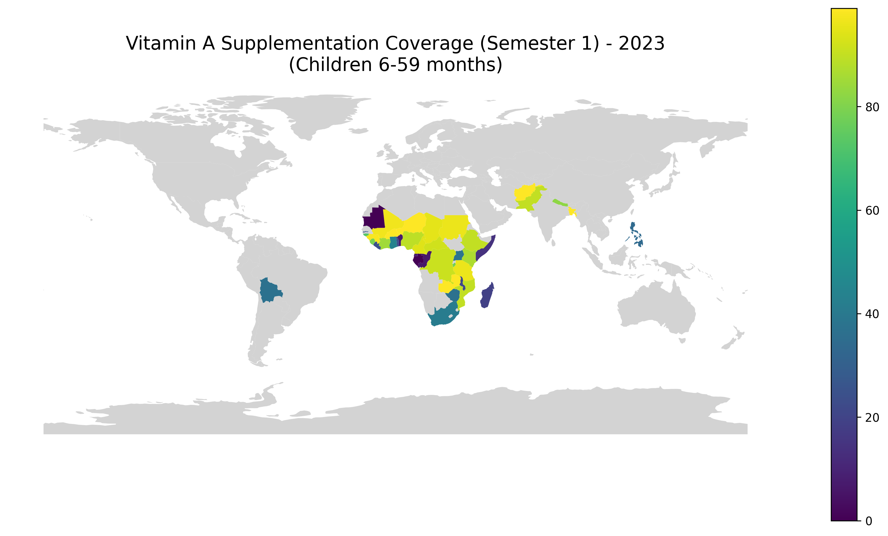
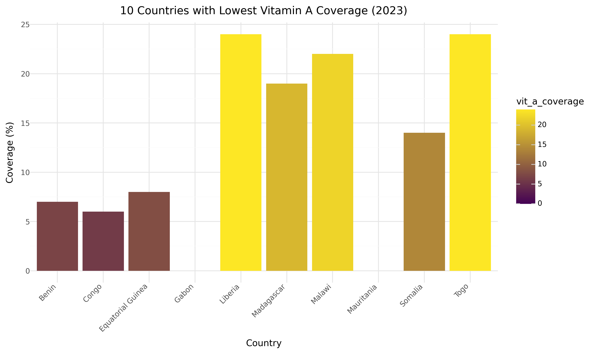
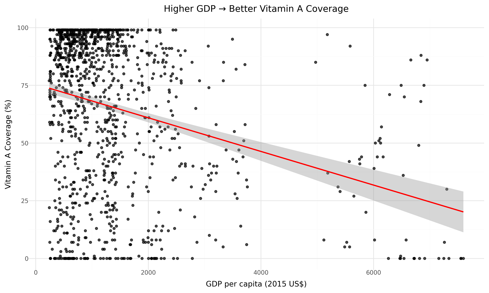
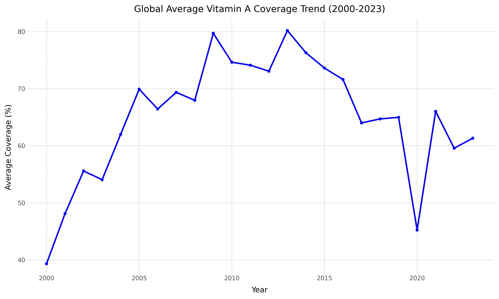

Your Full Name - BAA1030
Vitamin A deficiency is one of the leading preventable causes of blindness and death among children under 5. Supplementation programmes have been shown to reduce child mortality by up to 23% in high-risk areas.
This report explores global coverage of Vitamin A supplementation (Semester 1) for children aged 6–59 months, its relationship with child mortality (ages 5–9), and how economic factors influence outcomes.

The map highlights strong coverage in East Asia, Latin America, and parts of South Asia, while several countries in sub-Saharan Africa and the Middle East show very low coverage.

Several countries still have coverage below 10%. This represents a major public health challenge that UNICEF and governments must address urgently.

The clear upward trend line shows that wealthier countries tend to achieve significantly higher Vitamin A supplementation coverage.

While there has been overall improvement, the COVID-19 period caused noticeable disruptions in many countries.
To protect the most vulnerable children, increased investment in supply chains, training, and awareness campaigns is essential in low-coverage countries. Every additional percentage point in coverage can save thousands of young lives each year.
Data Sources: UNICEF Indicator 1 & 2, World Bank Metadata via unicef_metadata.csv